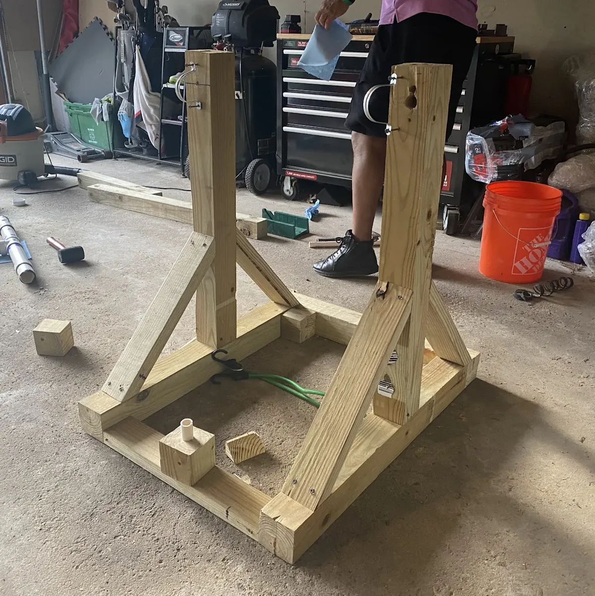
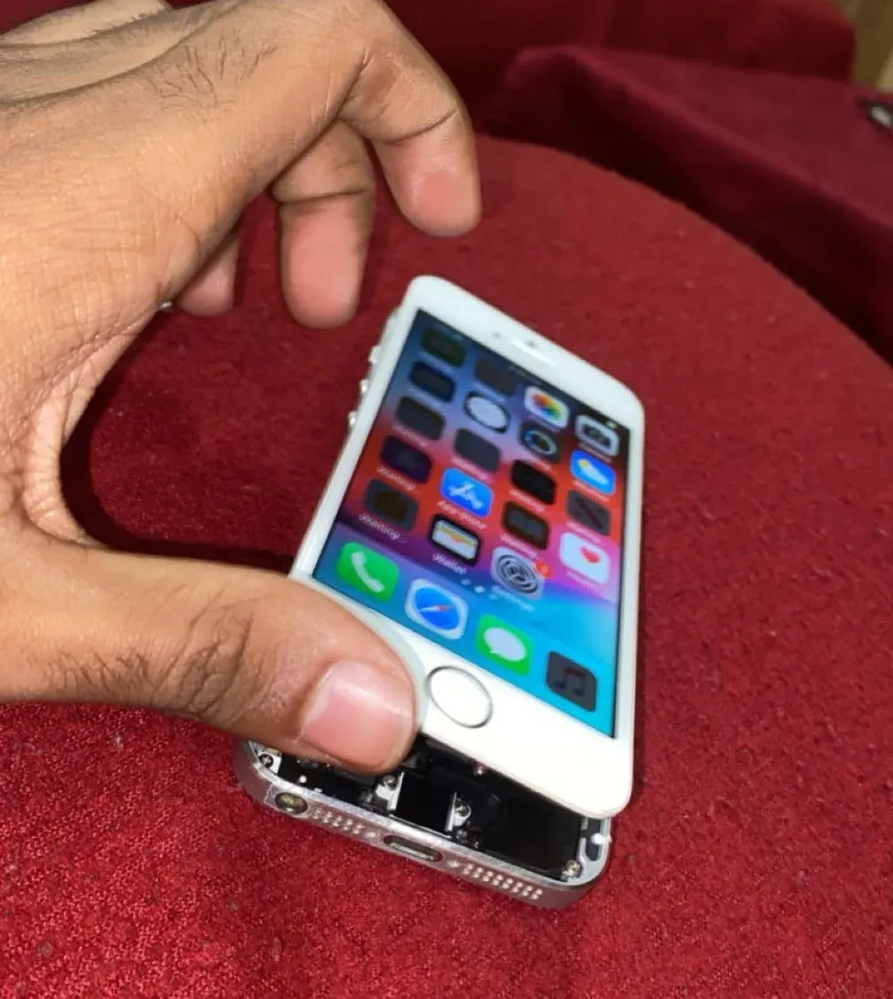

ME 347 · Design & prototyping
15:1 gear-ratio fidget
Developing a mechanical fidget through sketches, CAD prototypes, and 3D printing, with lessons in gear clearance and tooth engagement.
View projectAbout me
I’ve always learned by taking things apart, figuring out how they work, and trying something for myself.
That curiosity led me to mechanical engineering. I enjoy working on cars, repairing electronics, and turning an idea into a physical build. These projects share what I’ve worked on, how I approached the challenges, and what I learned along the way.
Selected projects
Design projects, personal builds, and repairs.
A closer look at the work behind each one.
ME 347 · Design & prototyping
Developing a mechanical fidget through sketches, CAD prototypes, and 3D printing, with lessons in gear clearance and tooth engagement.
View project
Course project · Team build
Designing and building a tennis-ball launcher with a $100 budget, common hand tools, and mechanical power.
View project
Personal project · Repair
Exploring the internals of the iPhone 5 and 6 through screen replacement, troubleshooting, and donor parts.
View project
Personal project · Kit build
Building a working speaker from a DIY kit while learning component identification, soldering, and assembly.
View projectMore project work
Applying engineering thinking with teammates,
technicians, and engineers.
Explore a safer way to move the Formula SAE car without pushing directly on its frame.
I worked with teammates to develop different push-bar concepts in SolidWorks and discuss how each design could support moving the vehicle.
CAD modeling, comparing design concepts, and communicating ideas within a team. My involvement focused on concept development.
Infrequently performed tests created knowledge gaps. Technicians needed clearer guidance to connect the standards, datasheets, and practical setup requirements.
I created digital reference guides for six tests, combining the associated UL standards, Test Data Sheets, and lab technician guidance. The guides covered equipment, setup, procedures, and potential risks.
Standardized reference materials designed to make test information easier to find and support knowledge retention across the lab.
Help the department understand patterns across its completed projects as part of a pricing initiative.
I reviewed completed projects and filled out structured surveys containing project information to support the team’s analysis.
Reviewing records carefully, organizing information consistently, and connecting project details to broader business questions.
UL Solutions projects are described at a high level to respect confidentiality. Internal documents, test details, and company data are not shared.